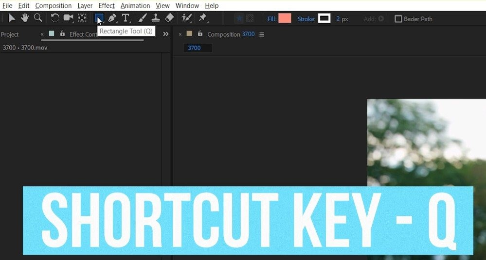
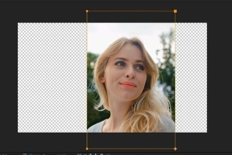
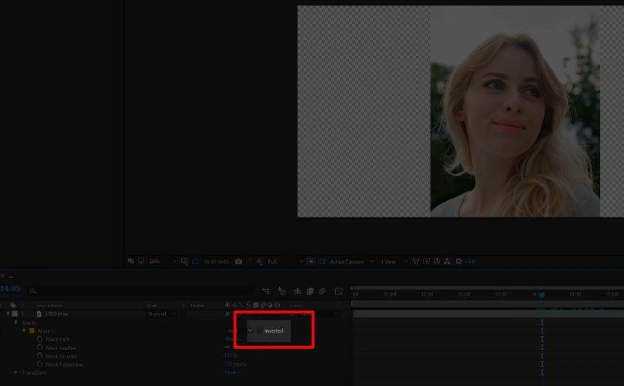
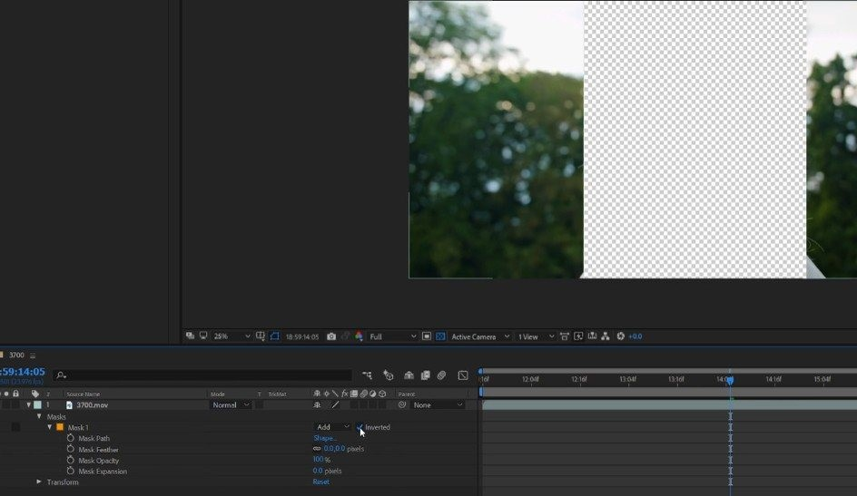

AELab
Выполнил Никита Трунов
Курсовая работа
Создание маски After Effects
Для создания маски воспользуйтесь инструментом — Rectangle Tool, или горячей клавишей Q. После чего, вы можете выделить прямоугольную область.


Теперь вы можете посмотреть и управлять свойствами маски.
Свойства маски
Mask Path – местоположение маски. Поскольку After Effects работает с видео а не с фото, то объект, который мы выделили, может «убежать». Чтобы избежать этого, мы должны передвинуть маску. Это можно сделать при помощи мыши, а можно и при помощи клавиатуры.
Mask Feather — Сглаживание краев. Используется для более плавного отделения. Чем выше значение, тем сильнее будут размазаны края.
Mask Opacity — Определяет прозрачность маски.
Mask Expansion — Определяет размер маски. Дело в том, что вам возможно придется увеличить или уменьшить маску. Да, для этого можно выделить заново её. Но проще дать знать программе, что вы ее хотите увеличить.
Часто также бывают ситуации, когда объект нужно не оставить, а наоборот, удалить. В таком случае, нужно просто инвертировать маску. В этом случае, то что будет внутри маски, станет невидимым, а то, что за границей, станет видимым.


Виды маски
Но кроме этого, есть и другой инструмент для создания маски – Pen Tool
Но кроме этого, есть и другой инструмент для создания маски – Pen Tool
Чем больше вы создадите точек, тем более точно будет вырезан объект. Тут же доступны и кривые Безье, о которых, мы также говорили в прошлом уроке. Затем, после выделения объекта, вы смещаете ползунок текущего положения, и корректируете. В конечном итоге, вы получаете видео, обрезанное от фона.
Но вот собственно и все. Теперь, надеюсь, у вас появилось представление о том, что такое маска и как её создать в After Effects. А теперь, до встречи на следующем уроке!